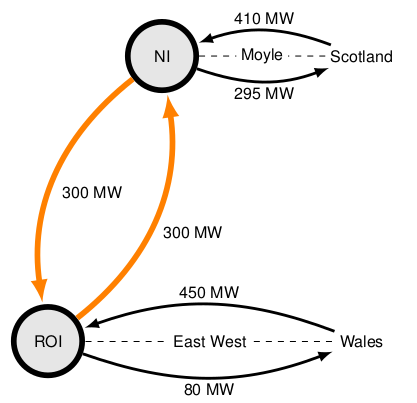

Network Data¶
OATS provide users with a range of test cases to simulate the implemented steady-state models. We request that publications derived from the use of OATS, or its datasets, acknowledge OATS by citing the following paper.
Bukhsh, C. Edmunds and K. Bell, “OATS: Optimisation and Analysis Toolbox for Power Systems,” in IEEE Transactions on Power Systems, vol. 35, no. 5, pp. 3552-3561, Sept. 2020, doi: 10.1109/TPWRS.2020.2986081. [Link]
Please raise any questions regarding the data on OATS discussion page.
MATPOWER test cases¶
MATPOWER is an open-source tool for solving power system steady-state analysis optimisation problems.
A Python script is provided that can be used to convert Matpower test-cases into equivalent OATS test-cases. This script is available on the OATS GitHub page.
If you are using a Matpower testcase for your study, we request you to cite Matpower, in addition to the OATS paper.
A reduced representative GB network¶
Geographical location of the nodes in the reduced GB network (Underlay: ETYS National Grid ESO, Overlay: Callum MacIver)¶
A reduced GB network model was developed at the University of Strathclyde in response to a need articulated in [1]. The network model is based on a solved 2009 full GB transmission network peak demand load flow case and has been used in [2] to study the optimal loading of the Western link.
This case has been tested for convergence on DC/AC load flow, DC/AC optimal power flow and security-constrained optimal power flow problems.
We request you to cite [1], in addition to the OATS paper, for any publications that are derived from this dataset.
[1] K. Bell, A. Tleis, Test system requirements for modelling future power systems. Paper presented at 2010 General Meeting of the Power and Energy Society (PES), Minneapolis, Minnesota, . https://doi.org/10.1109/PES.2010.5589807 [Link]
[2] A. Leavy, W. Bukhsh, K. Bell, Optimal operation of the Western Link embedded HVDC connection. Paper presented at 20th Power Systems Computation Conference, Dublin, Ireland. https://doi.org/10.23919/PSCC.2018.8442651 [Link]
An Irish testcase¶
{kind=link}
This is a two-area (Republic of Ireland and Northern Ireland) model assembled to solve a unit commitment problem in OATS. The main source of data is a report from Baringa Partners [3]. The transmission capacities were obtained from [4].
[3] Baringa Partners LLP 2016, “SEM PLEXOS model validation,” May 2016. [Online]. Available: https://www.semcommittee.com/news-centre/baringa-sem-plexos-forecast-model-2016-17
[4] House of Commons Northern Ireland Affairs Committee, “Electricity sector in northern ireland,” 2017. [Online]. Available: https://publications.parliament.uk/pa/cm201617/cmselect/cmniaf/51/51.pdf
This test case is tested for convergence on the unit commitment problem.